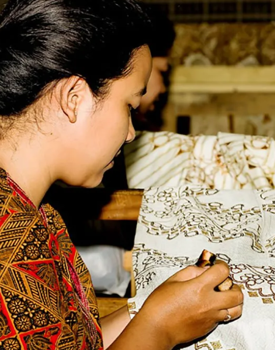
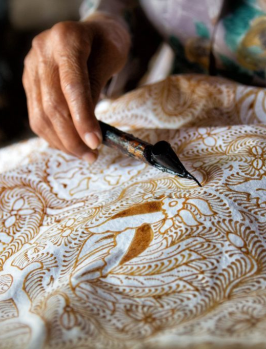
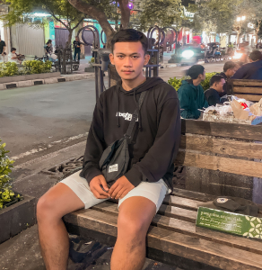
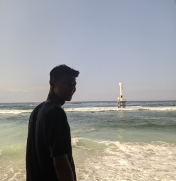

Budaya Batik di Indonesia
Batik merupakan warisan budaya nenek moyang yang telah menjadi bagian dari hidup masyarakat sejak lama. Pada tahun 2009, batik ditetapkan sebagai warisan bidaya takbenda oleh UNESCO karena keunikan teknik dan keindahan motifnya sehingga di akui sebagai warisan dunia

Hari Batik Nasional
Hari Batik Nasional dirayakan di Indonesia pada tanggal 2 Oktober setiap tahunnya. Hari ini memperingati pengakuan batik sebagai Warisan Kemanusiaan untuk Budaya Lisan dan Nonbendawi (Masterpiece of the Oral and Intangible Heritage of Humanity) oleh UNESCO, status yang diterimanya pada tanggal 2 Oktober 2009.

Gallery Batik di Indonesia
Kelompok Kami

Jordi Yoga Pratama
21533415

Yofhi Fauda Pradana
21533425
Muhammad Ridwan H
21533409

Ahmad Choirul Anwari
21533402